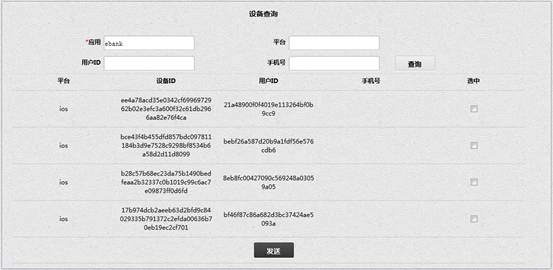
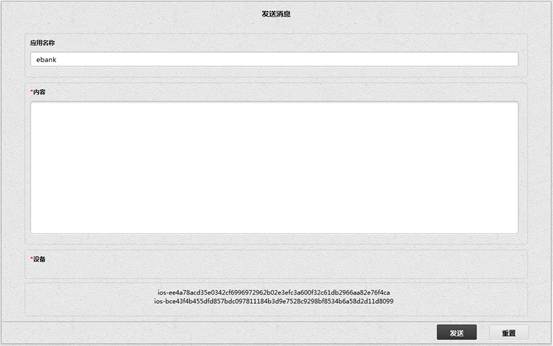
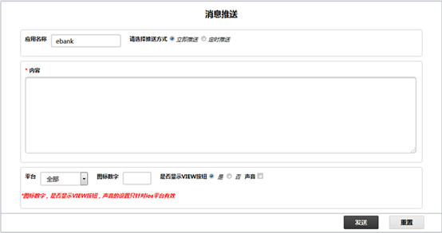
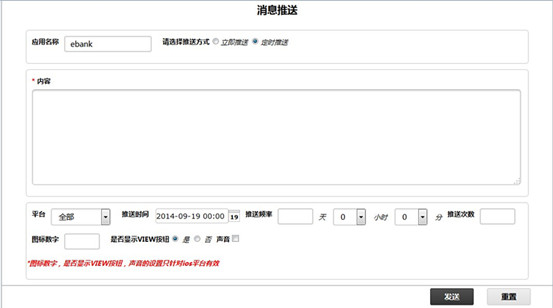

在 PUSH 管理模块中，我们支持对多种智能手机系统（IOS，Android，winphone）的消息推送功能，包括对消息推送进行立即和定时推送以及对推送记录的管理，服务的配置等功能。
用户点击设备查询二级菜单进入设备查询界面，界面如图所示:
设备查询时需保证 PUSH 服务的基础服务开启，即配置管理界面 MYSQL 数据库或 MNESIA 数据库为开启状态，因为查询的时候需要知道存储的设备ID是从哪种存储类型（MYSQL 数据库或 MNESIA 数据库）中读取的，而这个存储类型是基础服务开启时指定的。
输入必填项"应用"，比如当前项目的应用名称为 ebank，点击查询按钮，会列出数据库中存储的全部设备ID。也可以进一步限定查询条件，平台（ios，android，winphone），用户ID，手机号（暂时未用到）进行查询，查询结果如图所示：

发送消息：
勾选任意一条或多条设备记录，点击发送按钮，进入编辑发送信息界面，如图所示：

应用名称默认显示当前项目应用名称，不可编辑，在内容区域编辑要推送的消息，设备区域列出在设备查询界面勾选的设备平台和ID，点击【重置】按钮，输入的消息内容清空，点击【发送】按钮，提示 "消息发送成功！"，即系统向所选的设备推送消息成功。
用户点击消息推送二级菜单进入消息推送界面，界面如图所示:

应用名称默认显示当前项目应用名字，若同一个项目包含多个应用，可以手动编辑应用名称，当选择推送方式为立即推送时，界面如上图所示，编辑推送内容，可以支持的平台包括 ios，Android，winphone，可以单独选择一个平台进行推送，也可以选择全部对全部平台进行推送。 "图标数字"，"是否显示 VIEW 按钮"，"声音" 只针对 iphone 平台进行单独设置，比如图标数字，我们可以设定在 iphone 的图标上显示的数字，假设我们对 iphone 客户端做了2点更新或通知，可以将图标数字设定为2；"是否显示 VIEW 按钮" 是根据 ios 的系统版本来区分的，对于 ios 高于5.0版本的情况，消息推送通知对话框包含两个按钮，分别是忽略和查看，对于低于5.0版本的情况，只显示查看按钮；对于声音的设置表示当有推送消息时会有声音提醒；此处对 iphone 的单独设置是指管理后台可以提供的功能，具体在手机客户端是否生效还需参考手机关于消息推送的设置，仅当手机对推送的设置开启时管理后台的设置才能生效。点击【重置】按钮后，输入的信息清空。
当选择推送方式为定时推送时，界面如图所示：

与立即推送界面的区别在于关于定时的设置，点击推送时间，弹出日期控件，选择日期，表示定时推送的起始时间，推送频率包含*天*小时*分，表示从推送起始时间开始，每隔*天*小时*分进行推送一次，一共推送n次。
用户点击推送管理二级菜单进入推送管理界面，界面如图所示:
此处任务管理界面只针对未发送的推送消息进行管理，即从消息推送界面尚未被发送的定时消息，通过选择起始时间对这些消息记录进行查询。
记录包含任务ID，内容，状态，发布时间，操作，删除按钮，其中ID为序号，内容为推送的消息内容，状态都是待发送，发布时间为申请定时推送的时间，操作为删除。
此处日志查询界面只针对已发送的推送消息进行管理，即从消息推送界面已被发送的定时消息和消息推送界面发送的立即推送消息，以及设备查询界面发送的推送消息，通过选择起始时间对这些消息记录进行查询。
记录包含内容，类型，发布时间，其中内容为推送的消息内容，类型为定时和立即两种状态，发布时间为推送的时间或申请推送的时间。
配置管理模块提供了对 PUSH 基础服务的启动和关闭，以及对 App 下的所有平台的 push 控制参数做相应调整，增加运行时的灵活性。
用户点击配置管理二级菜单进入配置管理界面，界面如图所示:
PUSH 服务的生效一定保证 push 基础服务开启，一般情况下我们使用 MYSQL 数据库，而且一旦项目已经确定很少会切换push的基础服务。所谓的基础服务是指指定从哪种存储类型（MYSQL 数据库或 MNESIA 数据库）的数据库中读取设备信息并依此进行发送推送消息。
进入配置管理界面，在存储类型中会显示当前使用数据库的开启或关闭状态，若当前 MYSQL 数据库为开启状态，已开启按钮未灰色，可以点击关闭按钮进行关闭。
当配置方式选表单时，界面如上图所示。
如基础服务已开启，配置 ios 的各项参数：
证书文件： public/key/bankbh_cert.pem ，
私钥文件： public/key/bankbh_key.pem ，
CA证书文件（可选）： 未使用。
私钥文件密码（可选）： 未使用。
环境： 选择开发环境或生产环境，当选择不同环境时连接苹果提供的开发或测试的 push 服务器。
连接数： 整数，指定需要进行 push 推送所建立的连接数。
连接重建间隔（可选）： 为防止连接不自动释放可以设定连接重建时间。
开启 Android 平台的 push 服务流程较简单，只需部署一台 android 的服务器，此处填写服务器的地址即可。
点击【开启】按钮后，对应平台的 push 状态变成已开启，并且可以对已配置的信息进行修改和关闭操作。
点击【开启】按钮后，对应平台的 push 状态变成已开启，并且可以对已配置的信息进行修改和关闭操作。
Winphone 平台的 push 服务开启无需任何配置，只能在测试环境使用，预留的两个参数客户端ID(可选)和客户端私钥(可选)是留给生产环境用的，由于暂时没有证书未进行调试。
当配置方式选文件时，界面如图所示：
当选择文件方式进行开启时，不需要分别对每个平台进行开启，文件中包含全部平台的开启信息：
{ebank, [
{ios, [
{certfile, "public/key/empPushServicePublic.pem"},
{keyfile, "public/key/empPushServicePrivate.pem"},
{pool_size, 1},
{feedback, 4},
{env, development}
]},
{android, [
{xmpp_host, "http://192.168.64.64:5280/rest"}
]},
{winphone, [
{client_id, "Package security identifier (SID)"},
{client_secret, "/path/to/private_key"}]}
]}.